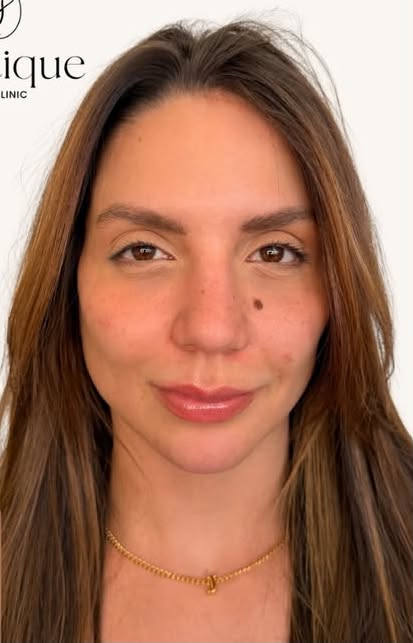
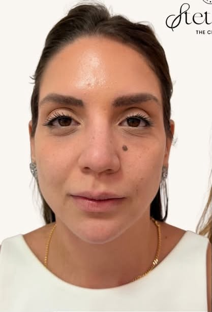
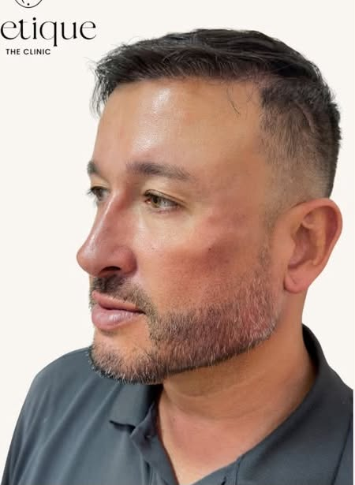
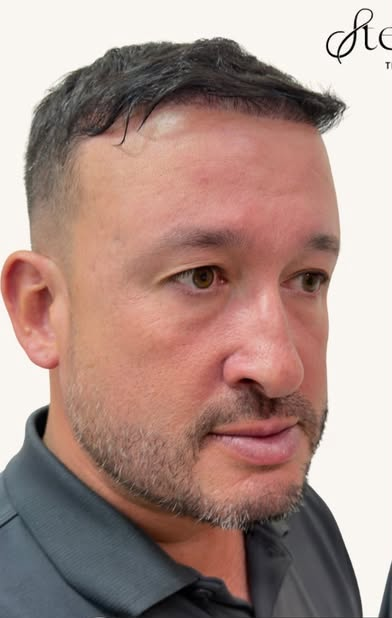
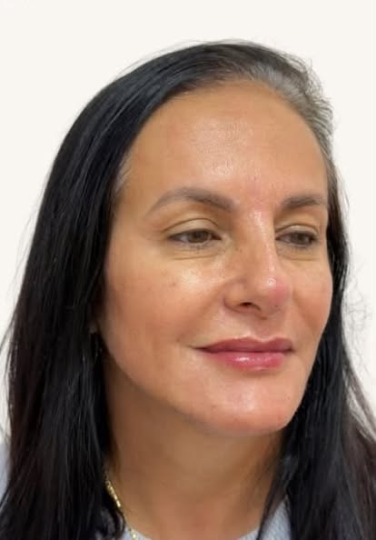
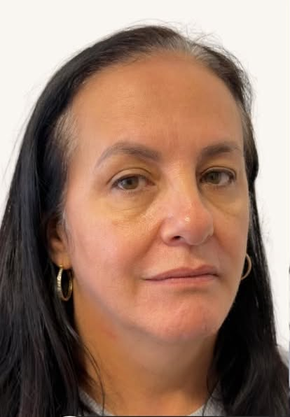
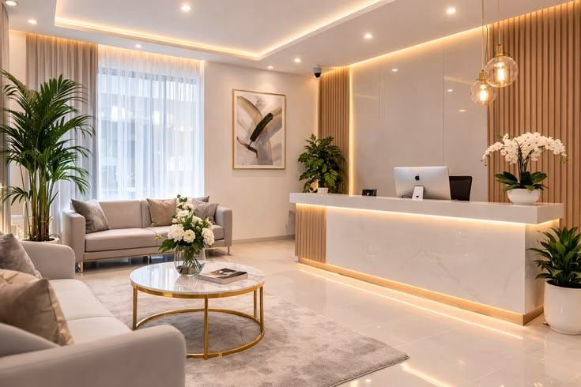

Harmonização facial
Planejamento individual
Harmonização facial em Brasília
— Transformo ciência em beleza autêntica desde 2018.
Dra. Stefany Gomes · Biomédica | CRBM00000
Planejamento individual
Proporções e expressão
Avaliação personalizada
Plano de cuidado
Atenção aos detalhes
Acompanhamento individual
Antes e depois
Explore as comparações movendo o controle para os lados.
Espaços de demonstração. Substitua apenas por imagens cuja utilização tenha sido verificada e autorizada.
Agendar avaliação →






Dra. Stefany Gomes
“Transformo ciência em beleza autêntica desde 2018.”
Biomédica, com foco em harmonização facial em Brasília. Um espaço para conversar sobre seus objetivos e construir um planejamento individual.
Biomédica | CRBM00000
Insira aqui uma avaliação real, após confirmar o texto e a autorização de uso.
Nome e origem a confirmarInsira aqui uma avaliação real, após confirmar o texto e a autorização de uso.
Nome e origem a confirmarInsira aqui uma avaliação real, após confirmar o texto e a autorização de uso.
Nome e origem a confirmarO primeiro passo é uma conversa. Entre em contato para consultar datas e horários.
É o momento de conversar sobre seus objetivos e esclarecer dúvidas. O planejamento e as orientações são definidos de forma individual.
O número de sessões depende da avaliação e do procedimento indicado. Confirme o planejamento diretamente com a profissional.
Os cuidados variam conforme o procedimento. Solicite as orientações de preparo e acompanhamento na avaliação.
Preencha o formulário para preparar sua mensagem de agendamento no WhatsApp. A confirmação de data e horário é feita pela equipe.